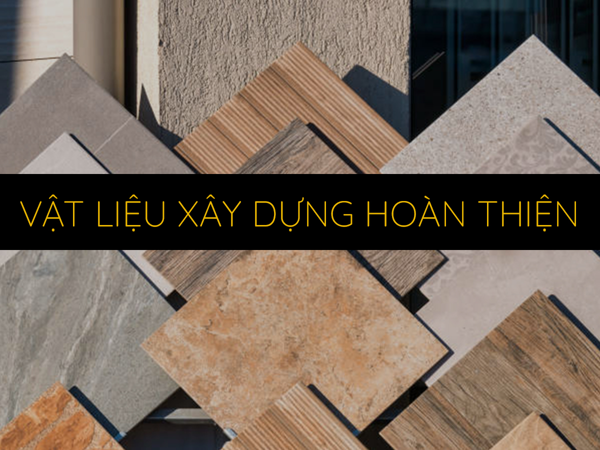
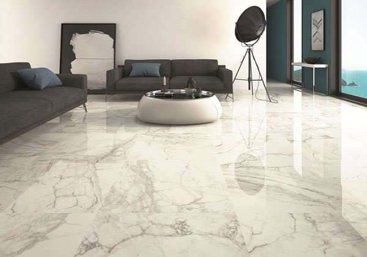
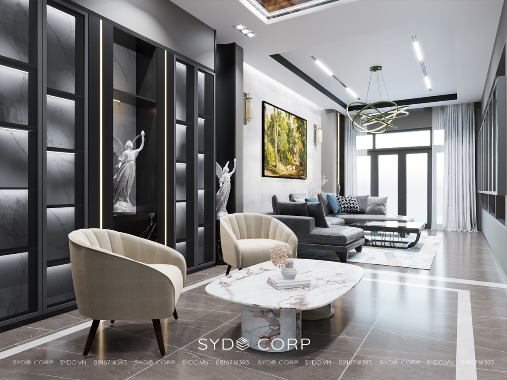
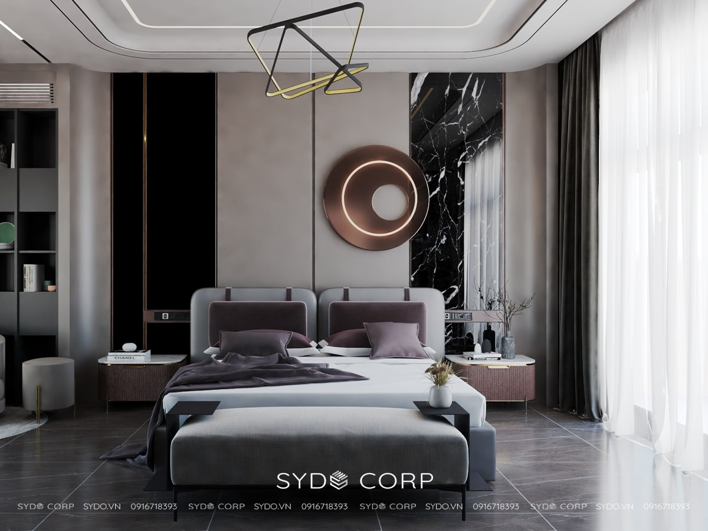
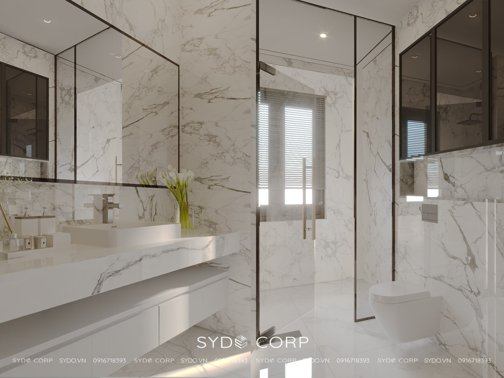
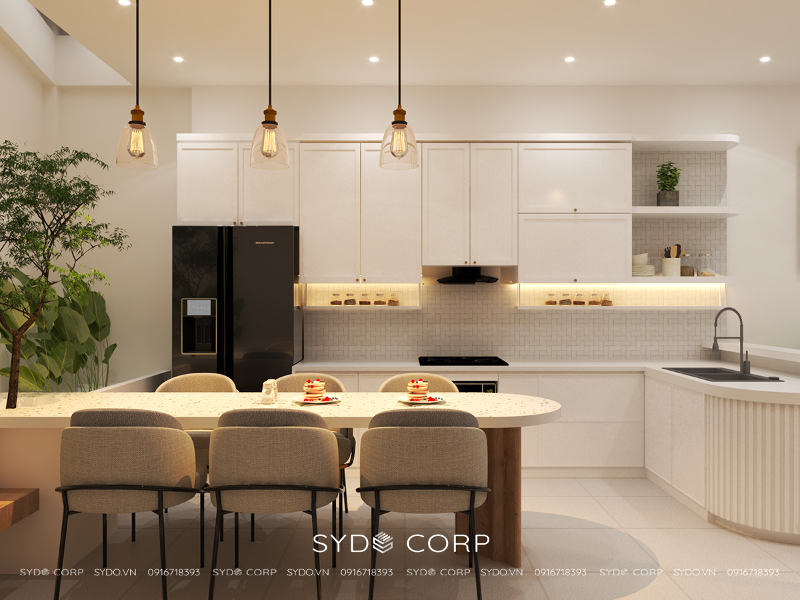
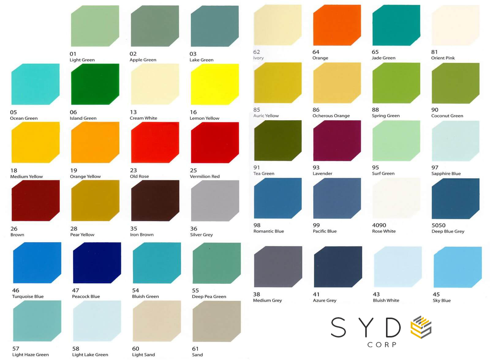
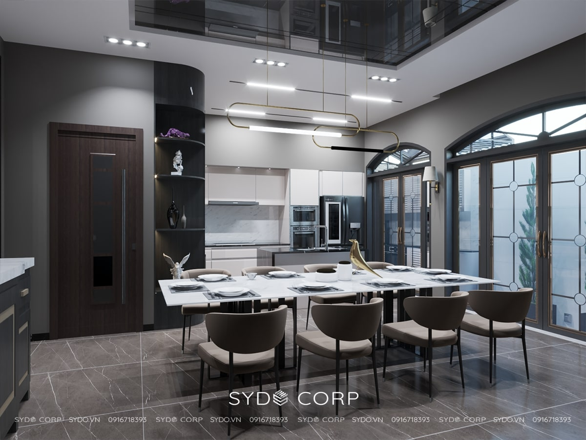
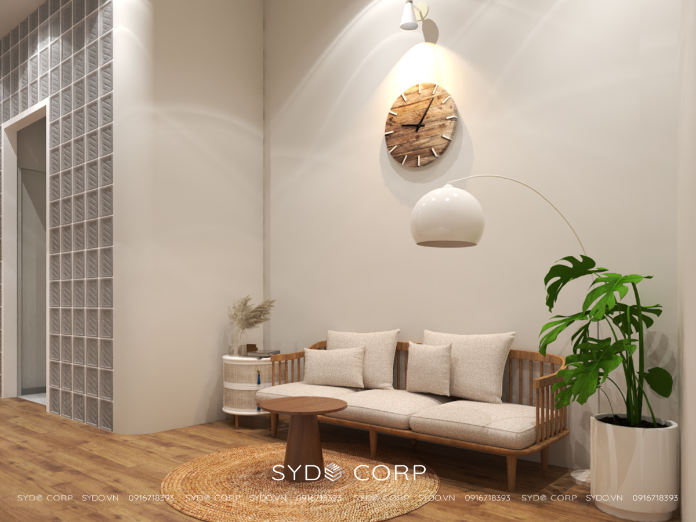

VẬT LIỆU XÂY DỰNG HOÀN THIỆN
| Số thứ tự | Hạng mục | Vật liệu | Hình ảnh minh họa | Ứng dụng |
|---|---|---|---|---|
| 1 | Nhà ở | Gạch lót |  |
Gạch ốp tường ngoài nhà. Gạch ốp tường ngoài nhà cần phải bền, chắc, và chịu được bất kỳ tác động nào của thời tiết. bề mặt gạch cứng chắc, lớp màu không bị bong tróc hoặc nhạt màu … |
| 2 | Nhà ở | Gạch lót | |
Gạch ốp tường ngoài nhà. Gạch ốp tường ngoài nhà cần phải bền, chắc, và chịu được bất kỳ tác động nào của thời tiết. bề mặt gạch cứng chắc, lớp màu không bị bong tróc hoặc nhạt màu … |
| 3 | Nhà ở | Gạch lót | |
Gạch ốp tường ngoài nhà. Gạch ốp tường ngoài nhà cần phải bền, chắc, và chịu được bất kỳ tác động nào của thời tiết. bề mặt gạch cứng chắc, lớp màu không bị bong tróc hoặc nhạt màu … |
| 4 | Nhà ở | Gạch lót | |
Gạch ốp tường ngoài nhà. Gạch ốp tường ngoài nhà cần phải bền, chắc, và chịu được bất kỳ tác động nào của thời tiết. bề mặt gạch cứng chắc, lớp màu không bị bong tróc hoặc nhạt màu … |
| 5 | Nhà ở | Gạch lót | |
Gạch ốp tường ngoài nhà. Gạch ốp tường ngoài nhà cần phải bền, chắc, và chịu được bất kỳ tác động nào của thời tiết. bề mặt gạch cứng chắc, lớp màu không bị bong tróc hoặc nhạt màu … |
Vật liệu xây dựng hoàn thiện
Như chúng ta đã biết, trong quá trình thi công một công trình kiến trúc xây dựng thì việc lựa chọn vật liệu thô và vật liệu xây dựng hoàn thiện là một trong những vấn đề quan trọng mà tất cả các gia chủ cần quan tâm. Theo đó, vật liệu thô nắm giữ sự vững chãi của công trình thì vật liệu hoàn thiện lại có vai trò trang hoàng, giúp cho công trình của bạn trở nên đẹp hơn và thu hút hơn bao giờ hết.
Nếu bạn nắm giữ được cách lựa chọn vật liệu xây dựng hoàn thiện không những sẽ giúp cho công trình của bạn trở nên duy mỹ, tạo nên sự khác biệt cho diện mạo của ngôi nhà mà còn giúp cho gia chủ tiết kiệm được phần nào thời gian và chi phí thi công. Những nội dung mà chúng tôi sắp chia sẻ dưới đây sẽ là gợi ý cho bạn bí quyết lựa chọn vật liệu hoàn thiện một cách thông minh nhất.
1. Gạch lát nền

Gạch lát nền là một trong những vật liệu xây dựng mà tất cả chúng ta cần quan tâm trong quá trình xây dựng nhà. Một mặt sàn được thiết kế khoa học thì sẽ giúp cho không gian nhà của bạn trở nên duy mỹ và tạo được cảm giác thu hút sự chú ý của tất cả mọi người.
Dựa theo kinh nghiệm xây nhà trọn gói, chúng tôi nhận thấy điều quan trọng nhất khi chọn gạch lát nền cho ngôi nhà phải là màu sắc hài hoà và phù hợp với không gian của cả căn nhà. Bên cạnh đó, bạn cần lựa gạch lát nền theo diện tích của ngôi nhà.
Những kiến trúc xây dựng nhà phố hoặc nhà biệt thự mà có không gian rộng rãi, bạn có thể tham khảo các mẫu gạch hoa văn nhỏ, sẫm màu để tạo được không gian sang trọng, cổ điển cho ngôi nhà của mình.
Còn đối với những không gian là căn hộ chung cư, có không gian hẹp hơn thì bạn có thể lựa chọn sử dụng những loại gạch lát nền có kích thước lớn, màu sắc sáng để tạo nên sự rộng rãi cho cả không gian.
Ngoài ra bạn cũng nên lưu ý một rằng, việc lựa chọn gạch lát nền cần phải tuân thủ màu sắc tổng thể của ngôi nhà, để hạn chế tối đa sự phá vỡ đi sự liên kết của cả không gian.
1.1 Gạch lát nền phòng khách

Như chúng ta đã biết, phòng khách là điểm chạm đầu tiên khi có khách tới thăm nhà. Do đó, chúng ta cần chú trọng việc lựa chọn gạch lát nền để đảm bảo được độ duy mỹ cho cả ngôi nhà, giúp ngôi nhà được thu hút hơn.
Nếu không gian phòng khách của bạn rộng rãi, bạn có thể tìm hiểu những loại gạch cao cấp, độ láng bóng để giúp tạo được sự lịch sự và trang nhã cho không gian. Ngoài ra, bạn có thể trang trí thêm bằng các loại thảm sàn để không gian có thêm điểm nhấn và cũng là phương pháp để đề phòng sự trơn trượt cho ngôi nhà.
Nếu bạn là một người thích vẻ đẹp truyền thống thì việc sàn gỗ là một lựa chọn hoàn hảo dành cho bạn. Tuy nhiên, bạn cần tham khảo để lựa chọn loại vân gỗ và màu gỗ phù hợp với phong thuỷ để mang đến sự thoải mái và gần gũi cho không gian của bạn.
1.2 Gạch lát nền phòng ngủ

Phòng ngủ là không gian riêng tư của ngôi nhà, là nơi để các thành viên trong gia đình có thể thư giãn, nghỉ ngơi sau một ngày làm việc mệt mỏi.
Gạch chất lượng cao sẽ giữ mặt sàn khó bị trầy xước, hạn chế mài mòn và giữ màu nguyên vẹn. Gạch chất lượng sẽ có được khả năng chịu lực và chống thấm. Bề mặt gạch cũng có đặc điểm chống trơn giữ an toàn khi di chuyển.
Ngoài ra, bạn có thể lựa chọn các loại sàn gỗ thô đơn giản, có màu sắc nhẹ nhàng, ấm cúng để phối cùng với những mảng tường sáng. Ngoài ra, gỗ cũng là vật liệu có khả năng dễ lau chùi, không gây nguy hiểm trong quá trình di chuyển. Chúng còn tạo sự mát mẻ và cực kỳ thư giãn cho các thành viên trong gia đình.
1.3 Gạch lát nền phòng tắm

Đối với phòng tắm thoáng, rộng thì bạn nên lựa chọn các loại gạch men trắng bóng, bên cạnh đó có thể cân nhắc điểm xuyết những viên gạch có hoạ tiết cho không gian thêm điểm nhấn. Thôn thường, chúng ta có thể lựa chọn những loại gạch lát nền có màu trắng để tạo được cảm giác sạch sẽ, gọn gàng. Và đá hoa cương là lựa chọn hoàn hảo dành cho bạn, đây sẽ là những viên đá giúp bạn thoát khỏi những sự lo lắng về vấn đề tu sửa hay bảo trì mặt sàn.
Ngoài ra, bạn có thể lựa chọn một số loại gạch khác để tạo sự sinh động cho ngôi nhà tuỳ theo sở thích và nhu cầu của bản thân.
Còn nếu phòng tắm nhà bạn hạn chế về không gian, bạn có thể lựa chọn sàn gỗ, có thể kể đến các loại gỗ công nghiệp chống thấm cao cấp - đây là loại sàn được đánh gia số 1 về sự chống thấm và chống trơn trượt.
1.4 Gạch lát nền cho nhà bếp

Nhà bếp là tổ ấm của mỗi gia đình, theo đó, bạn có thể lựa chọn các loại gạch men đơn sắc và chất lượng để hạn chế những vết dính do thức ăn để lại, không tạo cảm giác trơ trượt cho không gian nhà bếp.
Ngoài ra, bạn có thể tham khảo thêm các loại gạch gốm hoạ tiết đơn giản hay những sàn gỗ phù hợp sẽ là sự lựa chọn an toàn, giúp không gian nhà bếp của bạn sẽ trở nên nổi bật hơn bao giờ hết.
2. Màu sơn

Màu sơn được xem là lớp trang điểm nắm giữ vai trò quan trọng hàng đầu quyết định xem ngôi nhà của bạn sẽ trông như thế nào. Tuỳ thuộc vào sở thích và khả năng tài chính của mình mà bạn có thể lựa chọn được loại sơn phù hợp về cả không gian lẫn mục đích của mình.
Những màu sáng sẽ giúp không gian của bạn trở nên thoáng mát và “ăn gian” được không gian. Còn những màu tối, trầm hơn thì tạo được sự ấm áp và gần gũi hơn cho ngôi nhà.
Ngoài ra, các màu mang hơi hướng tự nhiên cũng giúp cho tinh thần của các thành iên trong gia đình trở nên thoải mái và thư giãn hơn.


3. Đèn trang trí
Đèn trang trí là yếu tố giúp gia tăng thêm tính thẩm mỹ cho mỗi không gian khác nhau. Hiện nay đèn trang trí có rất nhiều kiểu dáng với từng chức năng khác nhau. Tuỳ vào từng không gian mà bạn có thể lựa chọn được loại đèn trang trí phù hợp.
Không gian rộng, có kiến trúc đồ sộ thì bạn có thể chọn những loại đèn có thiết kế cầu kỳ. Còn nếu không gian của bạn đơn giản, hiện đại thì bạn có thể lựa chọn những loại đèn tối giản về chi tiết.
Ngoài vị trí, kiểu dáng, chất liệu, bạn cũng cần xem xét đến kích thước của đèn. Những không gian rộng rãi, thoáng mát thì có thể lựa chọn những loại đèn có kích thước lớn, và ngược lại.
3. Trang thiết bị vệ sinh, phòng tắm
Nhắc đến khu vệ sinh, phòng tắm thì ai cũng nghĩ đó là công trình phụ trong căn nhà. Nhưng với kinh nghiệm lâu năm trong xây nhà trọn gói, đây lại là không gian được nhiều người quan tâm thể hiện giá trị cho ngôi nhà
Hiện nay, các công trình kiến trúc xây dựng tại Việt Nam đều thiết kế phòng vệ sinh và phòng tắm tích hợp. Do đó, không gian này thường cần có rất nhiều thiết bị, trong đó các thiết bị cơ bản bắt buộc phải có đó là: chậu rửa mặt, vòi sen, vòi nước, bình nóng lạnh và một số phụ kiện dùng cho mục đích cá nhân.
Bồn cầu là thiết bị vệ sinh quan trọng hàng đầu của nhà vệ sinh. Tuỳ thuộc vào không gian nhà vệ sinh mà bạn có thể lựa chọn cấu tạo và kích thước phù hợp.
Đối với những loại chậu rửa mặt hay vòi nước cũng nên chọn các loại gắn tường để tiết kiệm được diện tích cho không gian. Bên cạnh đó, bạn có thể lựa chọn thêm các dụng cụ như gương, giỏ đồ hay móc treo đồ,... để trang bị thêm cho nhà tắm của mình.
Trên đây là những kiến thức khi lựa chọn vật liệu xây dựng hoàn thiện mà bạn có thể tham khảo cho công trình kiến trúc xây dựng của mình. Bạn nên cân nhắc lựa chọn những sản phẩm, vật liệu phù hợp với tài chính mà vẫn đáp ứng nhu cầu sử dụng của gia đình để giúp tiết kiệm được chi phí xây dựng cho cả công trình. Nếu có điều gì cần giải đáp thêm về vấn đề này bạn có thể liên hệ trực tiếp với chúng tôi hoặc bất kể một đơn vị xây nhà trọn gói nào để được giải đáp kịp thời, phục vụ cho nhu cầu xây nhà của mình nhé!
𝗦𝗬𝗗𝗢 𝗖𝗢𝗥𝗣 – Nền tảng của sự đổi mới
Công Ty TNHH Kiến Trúc Xây Dựng SYDO
𝗛𝗼𝘁𝗹𝗶𝗻𝗲: 08 678 15109 (SĐT có dùng zalo)
𝗢𝗳𝗳𝗶𝗰𝗲: 50/12 Đường 19, Hiệp Bình Chánh, TP. Thủ Đức, HCM
𝗪𝗲𝗯𝘀𝗶𝘁𝗲: https://sydo.vn/
𝗘𝗺𝗮𝗶𝗹: sydocorp@gmail.com